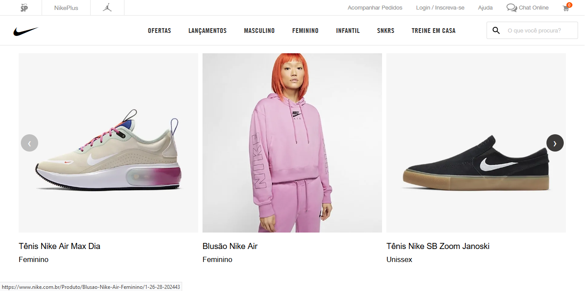

Já se perguntou qual a diferença entre essas duas plataformas?
Existe mesmo uma significativa distinção entre os dois ou são coisas semelhantes mas com nomes distintos? Aqui você vai aprender as particularidades de cada um e entender por vez a diferença entre site e blog.

A grande diferença consiste no conteúdo abordado por cada plataforma. Enquanto sites tendem a ser a representação de uma empresa/negocio e mostram os produtos e serviços que essas ofertam, um blog tem conteúdos mais informativos e técnicos, onde as opiniões e visões estão mais presentes. Blogs, em sua maioria, contém alguma área especifica e o cuidador desse blog posta diversos tópicos e informações dentro dessa área.
A quantidade de informação também se caracteriza como diferença entre os dois. Um blog tem mais densidade de informações e pode chegar a armazenar anos de conteúdo. Já um site tende a ser mais “limpo” e objetivo, justamente vendo que é mais utilizado para mostrar um produto/serviço e isso facilita a localização para os clientes e adeptos do conteúdo.
Os conteúdos em blogs devem ser atualizados constantemente para caracterizar uma pagina como blog. O upload de conteúdos diferencia o blog de sites, uma vez que o ultimo sofre leves alterações a partir do momento que está no domínio público. Os blogs tendem a produzir mais conteúdos do que os sites.
Por serem mais voltados para negócios, os sites devem ter manutenções frequentes para garantir que o cliente ou usuário final não tenha problemas para acessar seu conteúdo, o que poderia levar a uma perda de lucro da empresa.
Os blogs também devem ter manutenção, mas não em uma frequência igual a de sites pois seus conteúdos não se fazem de necessidade imediata para os consumidores dessa plataforma.
Por serem voltados para um proposito para negócios, os sites devem ter manutenções frequentes para garantir que o cliente ou usuário final não tenha problemas para acessar seu conteúdo, o que poderia levar a uma perda de lucro da empresa.
Os blogs também devem ter manutenção, mas não em uma frequência igual a de sites pois seus conteúdos não se fazem de necessidade imediata para os consumidores dessa plataforma.
Há a possibilidade de existir um hibrido entre os dois. Um blog pode servir para a exposição de produtos e serviços e ajudar a passar uma imagem de algo mais formal para o cliente. Um site pode oferecer uma interação mais próxima com seus usuários e passar a imagem de menos informal, o que está de alta nas táticas de marketing atuais.